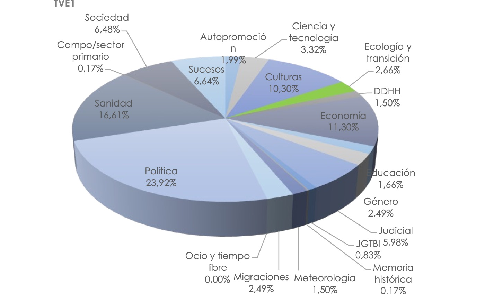

The eco-social transition is the transformation of societies towards ways of life in harmony with nature, especially in the current context of ecosystem crisis. Media dynamics and routines related to agenda setting, supported by framing and priming theories, are fundamental in this process: the media can become an inspiring reference for society or, on the contrary, act as a barrier. This research analyses the presence of eco-social transition topics in the programming and main news bulletins of Spain’s national general-interest television channels: TVE1, La2, Antena3, Cuatro, Telecinco and LaSexta. The methodology combines a quantitative analysis of programme schedules over four weeks with an analysis of the channels’ news bulletins, quantifying news items related to topics that may foster the eco-social transition. Results show that only public channels broadcast ecology-related programmes, which never exceed 2% of their schedules. In national news bulletins, their presence does not reach 4% of the content. This minimal presence shows that much remains to be done. The research derives from the application of IRSCOM (Social Profitability Indicator in Communication, LabCOMandalucía, University of Málaga) to television channels.
Journal articles · 2023
The eco-social transition in generalist television channels in Spain: Presence and themes
Revista Mediterránea de Comunicación, 14(2)
